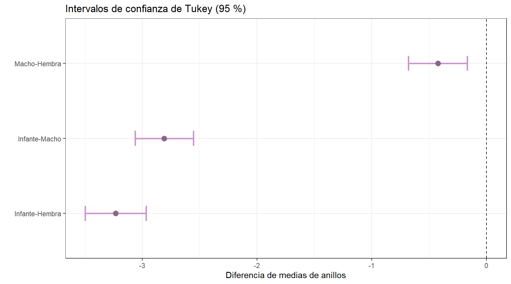

Capitulo 10 Pruebas paramétricas y no paramétricas: Anillos según Sexo
10.1 Comparación de dos grupos independientes: Hembras vs. Machos
Se comparan solo los adultos, porque es la comparación interesante (la diferencia con los infantes es evidente en el boxplot).
10.1.1 Verificación de supuestos
adultos <- abalone %>% filter(Sexo != "Infante") %>% droplevels()
# Normalidad en cada grupo
norm_adultos <- adultos %>%
group_by(Sexo) %>%
summarise(
W_Shapiro = shapiro.test(Anillos)$statistic,
p_Shapiro = shapiro.test(Anillos)$p.value,
D_Lilliefors = lillie.test(Anillos)$statistic,
p_Lilliefors = lillie.test(Anillos)$p.value
)
norm_adultos %>% tabla("Normalidad de Anillos en hembras y machos", d = 4)| Sexo | W_Shapiro | p_Shapiro | D_Lilliefors | p_Lilliefors |
|---|---|---|---|---|
| Hembra | 0.8853 | 0 | 0.1838 | 0 |
| Macho | 0.9093 | 0 | 0.1785 | 0 |
##
## F test to compare two variances
##
## data: Anillos by Sexo
## F = 1.0521, num df = 1306, denom df = 1527, p-value = 0.3393
## alternative hypothesis: true ratio of variances is not equal to 1
## 95 percent confidence interval:
## 0.9479407 1.1683161
## sample estimates:
## ratio of variances
## 1.052148## Levene's Test for Homogeneity of Variance (center = "median")
## Df F value Pr(>F)
## group 1 0.7229 0.3953
## 2833Interpretación: La prueba F de Fisher presenta un valor p de 0,3393, superior al nivel de significancia de 0,05, por lo que no se rechaza la hipótesis nula de igualdad de varianzas entre hembras y machos. Este resultado se confirma mediante la prueba de Levene, cuyo valor p es 0,3953, también superior a 0,05. En conclusión, no se encuentran diferencias estadísticamente significativas entre las varianzas del número de anillos de hembras y machos, por lo que se puede asumir homogeneidad de varianzas entre ambos grupos.
10.1.2 Prueba t para muestras independientes
\(H_0: \mu_H = \mu_M\) vs. \(H_1: \mu_H \neq \mu_M\).
##
## Two Sample t-test
##
## data: Anillos by Sexo
## t = 3.6729, df = 2833, p-value = 0.0002442
## alternative hypothesis: true difference in means between group Hembra and group Macho is not equal to 0
## 95 percent confidence interval:
## 0.1975565 0.6500562
## sample estimates:
## mean in group Hembra mean in group Macho
## 11.1293 10.7055##
## Cohen's d
##
## d estimate: 0.1383853 (negligible)
## 95 percent confidence interval:
## lower upper
## 0.0644202 0.2123504Interpretación: La prueba t muestra diferencias estadísticamente significativas entre hembras y machos (p = 0,0002442). Las hembras presentan un promedio mayor de anillos (11,13) que los machos (10,71). Sin embargo, el tamaño del efecto es muy pequeño (d = 0,138), por lo que la diferencia tiene poca relevancia práctica.
10.1.3 Prueba de Mann-Whitney (Wilcoxon de rangos)
\(H_0\): las distribuciones de anillos de hembras y machos son iguales.
## # A tibble: 1 × 7
## .y. group1 group2 n1 n2 statistic p
## * <chr> <chr> <chr> <int> <int> <dbl> <dbl>
## 1 Anillos Hembra Macho 1307 1528 1080749 0.000134## # A tibble: 1 × 7
## .y. group1 group2 effsize n1 n2 magnitude
## * <chr> <chr> <chr> <dbl> <int> <int> <ord>
## 1 Anillos Hembra Macho 0.0717 1307 1528 smallINTERPRETACIÓN El tamaño del efecto de 0,0717 indica una diferencia pequeña entre hembras y machos en el número de anillos. Esto significa que, aunque existen diferencias entre ambos grupos, su magnitud es reducida y tiene poca relevancia práctica.
10.2 ANOVA de un factor: comparación de los tres grupos
\(H_0: \mu_H = \mu_M = \mu_I\) vs. \(H_1\): al menos una media es diferente.
## Df Sum Sq Mean Sq F value Pr(>F)
## Sexo 2 8318 4159 495.2 <2e-16 ***
## Residuals 4168 35008 8
## ---
## Signif. codes: 0 '***' 0.001 '**' 0.01 '*' 0.05 '.' 0.1 ' ' 1Interpretación: El ANOVA muestra diferencias estadísticamente significativas en el número de anillos según el sexo (F = 495,2; p < 0,001). Esto indica que al menos uno de los tres grupos (hembras, machos e infantes) presenta un promedio de anillos diferente a los demás. Por lo tanto, se rechaza la hipótesis nula de igualdad de medias.
Verificación de supuestos del ANOVA
##
## Shapiro-Wilk normality test
##
## data: residuals(anova_sexo)
## W = 0.90981, p-value < 2.2e-16##
## Bartlett test of homogeneity of variances
##
## data: Anillos by Sexo
## Bartlett's K-squared = 68.016, df = 2, p-value = 1.701e-15## Levene's Test for Homogeneity of Variance (center = "median")
## Df F value Pr(>F)
## group 2 12.976 2.411e-06 ***
## 4168
## ---
## Signif. codes: 0 '***' 0.001 '**' 0.01 '*' 0.05 '.' 0.1 ' ' 1Interpretación: La prueba de Shapiro-Wilk (p < 0,001) indica que los residuos no siguen una distribución normal. Asimismo, las pruebas de Bartlett (p < 0,001) y Levene (p < 0,001) muestran que las varianzas de los grupos no son homogéneas. Por lo que no se cumplen los supuestos de normalidad ni de igualdad de varianzas del ANOVA.
Comparaciones múltiples (Tukey HSD)
## Tukey multiple comparisons of means
## 95% family-wise confidence level
##
## Fit: aov(formula = Anillos ~ Sexo, data = abalone)
##
## $Sexo
## diff lwr upr p adj
## Macho-Hembra -0.4238064 -0.6798134 -0.1677993 0.0003107
## Infante-Hembra -3.2318487 -3.4962005 -2.9674968 0.0000000
## Infante-Macho -2.8080423 -3.0625473 -2.5535372 0.0000000tk <- as.data.frame(tukey$Sexo) %>%
rownames_to_column("Comparacion") %>%
rename(p_ajustado = `p adj`)
tk %>%
ggplot(aes(x = diff, y = Comparacion)) +
geom_errorbar(aes(xmin = lwr, xmax = upr), width = 0.2,
color = col_line, linewidth = 1, orientation = "y") +
geom_point(color = col_dark, size = 3) +
geom_vline(xintercept = 0, linetype = "dashed") +
labs(title = "Intervalos de confianza de Tukey (95 %)",
x = "Diferencia de medias de anillos", y = "") +
theme_bw()
INTERPRETACIÓN La prueba de Tukey muestra diferencias estadísticamente significativas entre los tres grupos, ya que ninguno de los intervalos de confianza incluye el cero. Los infantes presentan un menor promedio de anillos que hembras y machos, mientras que las diferencias entre hembras y machos son más pequeñas.
10.3 Kruskal-Wallis y comparaciones post hoc
\(H_0\): las distribuciones de anillos son iguales en los tres grupos.
##
## Kruskal-Wallis rank sum test
##
## data: Anillos by Sexo
## Kruskal-Wallis chi-squared = 1079.8, df = 2, p-value < 2.2e-16# Comparaciones por pares con ajuste de Bonferroni
pw <- pairwise.wilcox.test(abalone$Anillos, abalone$Sexo,
p.adjust.method = "bonferroni", exact = FALSE)
pw##
## Pairwise comparisons using Wilcoxon rank sum test with continuity correction
##
## data: abalone$Anillos and abalone$Sexo
##
## Hembra Macho
## Macho 4e-04 -
## Infante <2e-16 <2e-16
##
## P value adjustment method: bonferroniINTERPRETACIÓN La prueba de Kruskal-Wallis muestra diferencias estadísticamente significativas en el número de anillos entre los grupos (p < 0,001). Las comparaciones por pares de Wilcoxon indican que existen diferencias significativas entre todas las categorías: hembras, machos e infantes. En conclusión podemos ver que el número de anillos presenta diferencias entre los tres grupos, confirmando que la categoría de sexo está relacionada con su distribución.